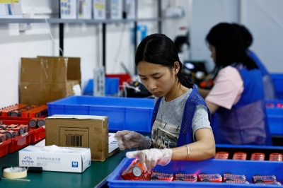

Turkish Central Bank to defend lira, sustain disinflation amid global market turmoil: Governor
Türkiye’s central bank stands ready to use its policy rate and macroprudential tools to support lira if needed, says Governor Fatih Karahan

Türkiye’s central bank stands ready to use its policy rate and macroprudential tools to support lira if needed, says Governor Fatih Karahan

The country has a problem with "bad inflation" driven by raw material costs, which could lead to deflationary forces when they subside.

Communist Party mouthpiece People’s Daily has pushed back against Western descriptions of China’s economy, including claims of a “deflation trap” and “China Shock 2.0”, accusing critics of seeking to undermine confidence in the country and justify trade restrictions. The remarks
Belirli bir şey mi arıyorsunuz? Tüm haberlerde ara.